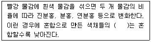
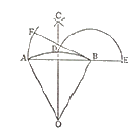

시각디자인산업기사 (2014-03-02 기출문제)
1과목: 색채학
1. 다음 색 중 중량감이 가장 가볍게 느껴지는 것은?
- 파랑
- 빨강
- 보라
- 주황
(정답률: 52%)

2. 색채조절의 효과에 대한 설명이 틀린 것은?
- 사용자의 기분을 편안하게 하여 작업속도가 느려져 근무시간이 연장된다.
- 눈의 긴장과 피로를 감소시켜 일의 능률이 오른다.
- 사고나 재해를 감소시켜 안전한 환경을 조성한다.
- 정리 정돈된 분위기를 유지하기가 용이하므로 경제적이다.
(정답률: 83%)
3. 다음 중 ( )에 들어갈 말로 옳은 것은?

- 명도
- 채도
- 밀도
- 명시도
(정답률: 77%)
4. 다음 중 감법혼색을 사용하지 않은 것은?
- 컬러 슬라이드
- 컬러 영화필름
- 컬러 인화사진
- 컬러 텔레비젼
(정답률: 67%)
5. 색광의 3원색은?
- 자주, 노랑, 청록
- 자주, 노랑, 남색
- 빨강, 녹색, 파랑
- 빨강, 노랑, 파랑
(정답률: 85%)
6. 오스트발트의 색체계에서 20ge라고 표기됐을 때 20은 무엇을 의미하는가?
- 색상으로 2SG이다.
- 명도 단계이다.
- 채도 단계이다.
- 유채색의 혼합량이다.
(정답률: 34%)
7. 오스트발트의 색채조화론 중 '기호의 뒤 문자가 동일한 색들은 서로 조화된다.' 는 것과 관련된 것은?
- 등백색계열 조화
- 등흑계열 조화
- 등순계열 조화
- 무채색에 의한 조화
(정답률: 64%)
8. 한국산업표준(KS) 색이름에 대한 설명 중 틀린 것은?
- 무채색의 기본색이름은 하양, 회색, 검정색으로 구분한다.
- 유채색 10색상에 분홍, 갈색이 추가되어 12색이 되었다.
- 먼셀 색이름 체계에 따라 색이름을 나타낸다.
- 무채색의 수식형용사에는 밝은, 어두운, 진한, 연한의 4가지가 있다.
(정답률: 35%)
9. 선호색에 대한 일반적인 설명 중 틀린 것은?
- 유아와 아동은 분홍색, 노랑색, 주황색, 빨강 등에 높은 기호도를 나타내고 있다.
- 남성 성인의 경우 보편적으로 파랑 계통의 색채를 선호한다.
- 보편적으로 사회적인 지위가 높을수록 차분한 색을 선호한다.
- 일반적 선호색은 제품의 종류에 관계없이 일관되게 적용된다.
(정답률: 84%)
10. 먼셀의 색채조화이론 핵심인 균형원리에서 각 색들이 가장 조화로운 배색을 이루는 평균 명도는?
- N4
- N3
- N5
- N2
(정답률: 86%)
11. 다음 중 현색계에 대한 설명으로 틀린 것은?
- 시각적으로 확인하기 쉽다.
- 측색기가 필요하다.
- 색표 사이의 간격에 지각적 등보성이 있다.
- 색표의 배열 및 개수를 용도에 맞게 조절할 수 있다.
(정답률: 78%)
12. 다음 배색 중 가장 차분한 느낌을 주는 것은?
- 빨강 - 흰색 - 검정
- 하늘색 - 흰색 - 회색
- 주황 - 녹색 - 보라
- 빨강 - 흰색 - 분홍
(정답률: 90%)
13. 표면색을 백색광으로 비쳤을 때 각 파장별로 빛이 반사되는 정도를 나타내는 용어는?
- 분광 밀도
- 분광 분포
- 분광 반사율
- 분광 복사 휘도율
(정답률: 85%)
14. 뉴턴은 1666년 빛의 굴절현상을 이용하여 프리즘으로 백색광을 분해하였는데 이때 파장별 분광되어 나오는 빛의 파장 중 장파장에 속하는 색은?
- 보라
- 노랑
- 빨강
- 초록
(정답률: 77%)
15. 태양빛을 프리즘으로 분광했을 때 스펙트럼 상에 존재하지 않은 색은?
- 노랑
- 파랑
- 녹색
- 회색
(정답률: 95%)
16. 색명에 관한 내용을 바르게 설명한 것은?
- 색명의 어원은 모두 동물, 식물 등 자연을 대상으로 하여 명칭 지어졌다.
- 모든 색명은 인명 또는 지명에서만 따온 것이다.
- 색명은 크게 관용색명과 일반색명으로 나눌 수 있다.
- 색명은 체계화되고 정확성을 가지면 실제 활용 면에서는 불편해진다.
(정답률: 68%)
17. 색채조화의 원리 중 갖아 보편적이며 공통적으로 적용할 수 있는 원리드 져드(Judd)가 주장하는 정성적 조화론에 속하지 않는 것은?
- 질서의 원리
- 친근성의 원리
- 명료성의 원리
- 보색의 원리
(정답률: 74%)
18. 디지털 컬러를 구현하는 색채 형식인 RGB 형식에 대한 설명 중 틀린 것은?
- Red, Green, Blue를 기본색으로 한다.
- Red는 0 ~ 255 값을 갖는다.
- RGB의 혼합으로 나타나는 2차색은 원색보다 밝아진다.
- RGB는 디지털 영상 장치가 변해도 보여지는 색채가 일정하다.
(정답률: 64%)
19. 다음 색채의 일반적 연상을 잘못 짝지은 것은?
- 빨강 - 정열, 사랑, 혁명
- 파랑 - 희열, 즐거움, 어린이
- 녹색 - 휴식, 평화, 생명
- 흰색 - 청순, 결백, 신성
(정답률: 95%)
20. 다음 중 색채에 대한 설명이 틀린 것은?
- 난색계의 빨강은 진출, 팽창되어 보인다.
- 노란색은 확대되어 보이는 색이다.
- 일정한 거리에서 보면 노란색이 파란색보다 가깝게 느껴진다.
- 같은 크기일 때 파랑, 청록 계통이 노랑, 빨강계열 보다 크게 보인다.
(정답률: 91%)
2과목: 인쇄 및 사진기법
21. 유리, 수면, 가구 등을 촬영할 때 반사되는 빛을 억제하기 위해서 사용되는 필터는?
- Polarizing light filter
- Neutral density filter
- Haze fIlter
- Contrast filter
(정답률: 58%)
22. 컬러필름 현상 시 미노출된 할로겐화은염(AgX)의 제거와 동시에 탈은(desilverizing)을 하는 과정은?
- 현상, 발색
- 표백, 정착
- 수세, 건조
- 발색, 수세
(정답률: 62%)
23. 필름의 감도에 대한 설명으로 틀린 것은?
- 빛에 반응하는 속도를 나타낸다.
- 숫자가 적을수록 반응 속도는 늦어진다.
- 감도가 높으면 적정 노출에 비해 더 많은 빛이 필요하다.
- 감도를 나타내는 표시 기호로는 ASA, DIN, ISO 등이 있다.
(정답률: 66%)
24. 거울면 광택을 낸 도포지로서 아트지보다 인쇄 효과가 좋고, 다색 인쇄의 상업 인쇄물, 캘린더, 포스터 등에 사용되는 용지는?
- 크라프트지
- MC지(machine coated paper)
- 상질지
- 캐스트 코팅지
(정답률: 38%)
25. A열 본판과 B열 본판의 가공 재단 치수의 폭과 길이에 대한 원칙적인 비율은?
- 1 : √2
- 1 : 1.6
- 1 : 2
- 1 : 5
(정답률: 54%)
26. UV 인쇄 후 잉크피막이 피인쇄체와 박리되는 UV 밀착 불량에 관한 설명 중 틀린 것은?
- Black 잉크의 피막이 두꺼울 때 발생한다.
- 잉크의 과잉유화로 레벨링이 불량할 때 발생한다.
- 플라스틱 필름에 코로나방전을 실시하면 좋아진다.
- 유성잉크와 동일한 축임물을 사용하면 좋아진다.
(정답률: 43%)
27. 문자의 크기에서 1급의 크기를 나타내는 것은?
- 문자 한 변의 길이가 1/2mm 인 정사각형 크기
- 문자 한 변이 길이가 1/3mm 인 정사각형 크기
- 문자 한 변이 길이가 1/4mm 인 정사각형 크기
- 문자 한 변이 길이가 1/8mm 인 정사각형 크기
(정답률: 72%)
28. 빛이 어떤 한 매질에서 다른 매질로 입사할 때 그 진행 방향이 달라지는 현상을 무엇이라 하는가?
- 회절
- 간섭
- 편광
- 굴절
(정답률: 84%)
29. 조명 비율이 명부:암부 = 1:1 이 되는 조명 방법은?
- 순광
- 사광
- 측광
- 반역광
(정답률: 53%)
30. 확대기 종류 중에서 콘트라스트가 가장 높게 나타나는 확대기는?
- 산광식 확대기
- 집산광식 확대기
- 집광식 확대기
- 반사식 확대기
(정답률: 56%)
31. 다음 중 다른 인쇄방식보다 강한 인쇄 압력이 필요하지만 농담이 풍부하고 힘 있는 인쇄물을 얻을 수 있어, 사진 인쇄에 가장 적당한 인쇄판은?
- 사진볼록판
- 사진평판
- 그라비어판
- 스크린판
(정답률: 55%)
32. 일안 리플렉스 카메라에 설치된 펜타프리즘의 주된 역할은?
- 피사계의 심도를 조절한다.
- 렌즈의 탈착을 용이하게 한다.
- 렌즈의 수차를 교정한다.
- 정립정상을 볼 수 있게 한다.
(정답률: 46%)
33. 인쇄의 판식(볼록판, 오목판, 평판, 공판)은 무엇으로 구분되어 지는가?
- 사용하는 판의 성분
- 잉크를 수용하는 화선부의 형태
- 사용하는 피인쇄체의 종류
- 사용하는 기술자
(정답률: 73%)
34. 한 권의 책 분량에 해당하는 쪽들을 순서대로 이어지도록 한 묶음씩 합치는 것을 무엇이라 하는가?
- 쪽맞추기
- 고르기
- 배팅
- 제함
(정답률: 83%)
35. 피사계 심도를 깊게 하려면 어떻게 해야 하는가?
- 낮은 조리개값으로 근접하여 촬영한다.
- 높은 조리개값으로 멀리서 활영한다.
- 초망원렌즈로 촬영한다.
- 마이크로렌즈로 낮은 조리개값을 이용하여 촬영한다.
(정답률: 52%)
36. 다음 중 감광재료의 수세 효과에 영향을 주는 용인으로 가장 거리가 먼 것은?
- 현상액의 종류
- 정착액의 종류
- 수세시간과 온도
- 수세수의 수질과 pH
(정답률: 32%)
37. 인쇄물의 화선부에 발생하는 줄무늬(streak)에 관한 설명이 틀린 것은?
- 판이나 블랭킷의 Gap부분의 충격으로 발생한다.
- 판통과 잉크 묻힘 롤러(form roller)의 압력이 강하면 발생한다.
- 통 베어링이 마모되면 발생한다.
- 일정한 간격으로 계속 발생하는 것이 쇼크얼룩(shock streak)이다.
(정답률: 60%)
38. 컬러필름의 색재현 원리는?
- 감색법
- 가색법
- 혼합법
- 현상법
(정답률: 53%)
39. 사진(photography)의 어원으로 옳은 것은?
- 어두운 방
- 그림을 복제하다.
- 화가용 도구
- 빛으로 그리다.
(정답률: 53%)
40. 어두운 장소에서 플래쉬를 이용하여 인물사진을 찍으면 눈의 동공이 빨갛게 나타나는 현상은?
- 적외선 회절현상
- 적목 현상
- 색반사 현상
- 고스트 현상
(정답률: 92%)
3과목: 시각디자인론
41. 굿 디자인(Good Design) 상품의 핵심 구성요소가 아닌 것은?
- 심미성, 창의성
- 기능성, 생산성
- 경제성, 환경친화성
- 장식성, 응용성
(정답률: 68%)
42. 대량생산을 위해서는 물건의 표준화(규격화)가 전제되어야 한다는 점을 일찍이 인식하고 1907년 독일에서 산업가, 건축가, 디자이너, 평론가들에 의해 조직된 단체는?
- 독일공작연맹
- 바우하우스
- 울름조형대학
- 유겐트 스틸
(정답률: 80%)
43. 기업이 경쟁에서 시장 확보의 우위를 차지하기 위한 제품 경쟁의 적정원칙에 해당하지 않는 것은?
- 계열화의 경쟁원칙
- 공급 가격의 적정원칙
- 공급 장소의 적정원칙
- 공급 수량의 적정원칙
(정답률: 55%)
44. 초현실주의와 거리가 먼 설명은?
- 무의식의 세계를 표현하는 예술운동
- 1924년 앙드레브르통에 의해 초현실주의 선언문 발표
- 샤갈, 달리 등이 주요 작가
- 재래의 예술형식을 계승하여 철저히 분석하는 주의
(정답률: 85%)
45. 디자인의 정의로 가장 거리가 먼 것은?
- 예술, 과학, 수학적 요소들이 복합적으로 관련되어 특정한 목표를 달성하려는 활동
- 그림이나 미술의 한 유형으로 문화 애호층의 여가활동을 지원하는 창작예술
- 자연의 아름다움에서 일정한 질서나 규칙을 발견해서 생활에 적용하려는 노력
- 참신한 아이디어와 합리성을 결합하여 조화로운 결과물을 만들어내려는 행위
(정답률: 73%)
46. 이탈리아 디자인과 관련이 없는 것은?
- 급진주의 디자인
- 절제된 양식
- 개성위주 디자인
- 역사적 유산
(정답률: 48%)
47. 장애의 유무에 관계없이 누구에게나 보다 편리한 것, 사용에 있어서 차별이 없은 것을 디자인하는 것을 말하며 '모든 사람을 위한 디자인' 이라고 불리우는 분야는?
- 유니버설 디자인
- 지속가능한 디자인
- 서비스 디자인
- 사용자 경험 디자인
(정답률: 76%)
48. 미국의 산업디자인이 발전하게 된 이유로 볼 수 없는 것은?
- 풍부한 자본력과 공업력이 밑바탕이 되었으므로
- 실용성을 중시하였기 때문에
- 바우하우스의 조형이념이 미국에서 꽃피워졌기 때문에
- 영국의 아카데미즘 영향을 크게 받았기 때문에
(정답률: 63%)
49. 윌터 크로피우스가 바우하우스의 선언문에서 조형미술의 궁극적인 목표로 둔 것은?
- 공예
- 조각
- 건축
- 회화
(정답률: 73%)
50. 동일한 요소나 대상을 연속적으로 되풀이하는 구성을 통해 효과적으로 표현할 수 있는 조형원리는?
- 비대칭
- 강화
- 대비
- 리듬
(정답률: 87%)
51. 다음 중 직접 지각하여 얻는 현실적인 형은?
- 인공적 형태
- 점, 선, 면
- 순수 형태
- 이념적 형
(정답률: 34%)
52. 그림의 작도는 무엇을 구하기 위한 것인가?

- 삼각형에 외접하는 원호
- 원호와 같은 길이의 직선
- 원호 길이의 삼각형
- 원을 이용한 원호 그리기
(정답률: 54%)
53. 플라스틱을 소재로 모흘리나기가 창조한 예술은?
- 빛의 연출
- 조각의 새로운 기법
- 유선형의 디자인
- 실용적인 의자
(정답률: 32%)
54. 1944년 영국에 설치된 세계적인 디자인 정책 기구로 모든 산업 분야에 최고 수준의 디자인을 요구, 수용함으로 질적 수준을 높이는 것을 목적으로 한 단체는?
- 국립미술대학
- 공업디자인 협의회(COID)
- 국제 디자인 회의(WDC)
- 산업미술 연구소(BIIA)
(정답률: 37%)
55. 미국의 알렉스 오즈번이 창안한 효율적인 아이디어 발상법으로서 자유로운 발언을 하는 과정에서 새로운 아이디어를 얻는 방법은?
- 체크리스트법
- 시네틱스
- 브레인스토밍
- 관찰법
(정답률: 90%)
56. 시각디자인에서 모든 조형의 기본적 시각요소는?
- 점, 선, 면
- 점, 입체
- 삼각, 사각, 원
- 육면체, 원기둥
(정답률: 96%)
57. 제도에서 가는 실선을 사용하는 경우가 아닌 것은?
- 치수 보조선
- 회전 단면선
- 기준선
- 수준면선
(정답률: 36%)
58. 정십이면체의 전개도를 제작하기 위해 필요한 단면의 모양은?
- 3각형
- 4각형
- 5각형
- 6각형
(정답률: 41%)
59. 고결, 희망, 상승, 긴장의 느낌과 관련된 선의 종류는?
- 직선
- 수직선
- 수평선
- 사선
(정답률: 80%)
60. 한국산업표준(KS)의 제도통칙에 의거하여 우리나라에서 사용하는 투상법은?
- 제1각법
- 제2각법
- 제3각법
- 제4각법
(정답률: 78%)
4과목: 시각디자인실무 이론
61. 픽셀들이 모여 일반적인 사진의 이미지 합성 작업에 사용되는 이미지는?
- 비트맵 이미지
- 벡터 이미지
- 랜덤 이미지
- 오브젝트 이미지
(정답률: 85%)
62. 다음 중 문화행사 포스터와 관련이 없는 내용은?
- 국가의 경제성, 문화수준 그리고 예술성을 잘 나타내기도 한다.
- 연극, 영화, 음악회, 전람회, 박람회 등의 고지적 기능을 수행한다.
- 일반적으로 공공 캔페인 포스터 또는 소셜 포스터를 의미한다.
- 제목 외에 일시, 장소 등 최소한의 자료를 기입할 필요가 있으며 한 눈에 내용을 이해할 수 있도록 제작한다.
(정답률: 71%)
63. 커뮤니케이션 방법 중 5대 감각기관에 의한 분류에 해당되지 않는 것은?
- 청각적
- 촉각적
- 예감적
- 후각적
(정답률: 91%)
64. 상품이 탄생하여 도입기, 성장기. 성숙기를 거쳐 쇠퇴기에 이르러 그 모습을 감추게 되는데 이러한 주기를 가장 잘 설명하는 말은?
- 리사이클(recycle)
- 리터칭(retouching)
- 제품수명주기(product life cycle)
- 리유즈(reuse)
(정답률: 92%)
65. 문자의 굵기, 장식적 변화, 폭, 높이 등을 바꾸어 다양화시킨 동일 계통의 서체 집합을 나타내는 용어는?
- 레터링(Lettering)
- 패밀리(Family)
- 이니셜(Initial)
- 타입페이스(Typeface)
(정답률: 53%)
66. 기업의 제품을 소비자에게 널리 알리기 위해 건물 위에 설치하는 간판의 형태는?
- 점두간판
- 옥상간판
- 입간판
- 전주간판
(정답률: 72%)
67. 사물의 형태에 따라 그 기억의 유지정도가 달라지는데 다음의 형태 중 가장 기억하기가 어려운 것은?
- 정삼각형
- 원
- 규격화된 형태
- 불규칙적인 형태
(정답률: 87%)
68. 다음 디자인 용어에 대한 설명 중 틀린 것은?
- 감성공학 디자인은 인간의 교육수준, 경험, 민족성, 문화적 배경까지 고려하여 디자인 개발을 한다.
- 유저 인터페이스(user interface)는 컴퓨터와 인간 상호작용의 접촉영역을 말한다.
- 테크니컬 일러스트레이션(technical illustration)은 유머, 풍자 등의 효과를 더욱 살린 캐리커처 그림이다.
- 빛의 간섭을 이용한 사진법을 홀로그래피 또는 홀로 그램이라 부른다.
(정답률: 83%)
69. 컴퓨터 그래픽스에서 제한된 수의 색상들을 사용하여 다양한 색상들을 시각적으로 섞어서 인접 컬러로 추출하는 방법은?
- 디더링(Dithering)
- 앤티앨리어싱(Anti-aliasing)
- 크로핑(Cropping)
- 팔레트 플래싱(Palette Flashing)
(정답률: 48%)
70. 차별적 우위점을 알리기 위한 제품의 특성, 소비자에게 주는 제품의 편익 등을 기본방향으로 삼는 광고전략은?
- 타겟(Target)
- 포지셔닝(Positioning)
- U.S,P(Unique Selling Proposition)
- 브랜드 이미지(Brand Image)
(정답률: 27%)
71. 교통 광고를 형태별로 분류한 것 중 가장 적합하지 않은 것은?
- 포스터형 광고
- 와이드 컬러형 광고
- 액자형 광고
- 애드벌룬형 광고
(정답률: 59%)
72. 편집 디자인(editorial design)에 대한 설명 중 틀린 것은?
- 1920년대 미국에서 사용하기 시작한 용어이다.
- 잡지 디자인과 책 디자인, 브로슈어 디자인 등이 이 범위에 속하며 신문 디자인은 별도로 한다.
- 초기에는 잡지 디자인과 거의 동의어로 사용되었다.
- 요즘은 출판 디자인(publication design)이라는 용어로 통일되는 추세다.
(정답률: 69%)
73. 사용자의 명령대로 실행하여 결과가 나타나도록 계산 작업을 수행하는 하드웨어 장치는?
- 입력장치
- 기억장치
- 연산장치
- 제어장치
(정답률: 65%)
74. 마케팅에 있어서 소비자 행동에 영향을 미치는 요인이 아닌 것은?
- 개인적 요인
- 심리적 요인
- 사회적 요인
- 강제적 요인
(정답률: 87%)
75. 시장조사는 예측을 세우기 위하여 실시된다. 다음 중 시장조사의 일반적 기초자료가 되지 않는 것은?
- 인구의 성별, 소득정도
- 인구의 연령구성
- 점포의 분포도
- 자본금
(정답률: 85%)
76. 신문광고의 발행 시기에 따른 분류에 해당되지 않는 것은?
- 주간신문
- 일간신문
- 일요신문
- 경제신문
(정답률: 76%)
77. 광고는 4P 중 어느 영역에 속하는가?
- 제품(product)
- 가격(price)
- 촉진(promotion)
- 유통(place)
(정답률: 91%)
78. 컴퓨터 그래픽스의 이미지 작업 시 고려할 사항으로 거리가 먼 것은?
- 클립아트를 사용하는 경우 저작권을 확인해야 한다.
- 처음 입력된 이미지의 화잘이 최종 결과물의 화질을 결정한다.
- 가장 높은 화잘의 이미지가 필요할 때는 고급인쇄에 사용되는 평판 스캐너를 사용해야 한다.
- 이미지는 출력을 고려하여 작업 크기보다 크게 스캔을 받는다.
(정답률: 50%)
79. 심벌마크의 모티브로서 적합하지 않은 것은?
- 기업 이념
- 기업 이미지
- 기업의 성격
- 기업의 이윤
(정답률: 85%)
80. 마케팅의 사회적 정의를 바르게 설명한 것은?
- 개인이나 단체는 가치 있는 제품이나 서비스를 만들어 제공하고, 다른 사람과 자유롭게 교환하는 것에 의해 필요한 것이나 욕구하는 것을 입수한다.
- 개인이나 단체는 제품을 물물교환에 의해 필요한 것이나 욕구하는 것을 입수한다.
- 개인이나 단체는 기업의 이익확대에 이바지하기 위해 판매활동에 참가한다.
- 개인이나 단체는 가치 있는 제품이나 서비스를 만들어 판매하고 그 수익금을 사회에 환원하여 구호활동과 같은 사회활동에 직간접적으로 참가한다.
(정답률: 59%)